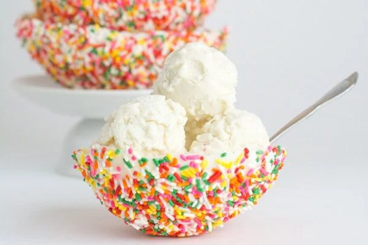
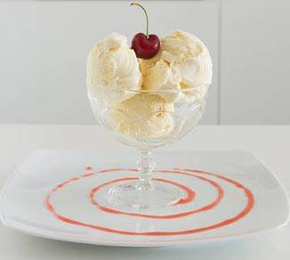
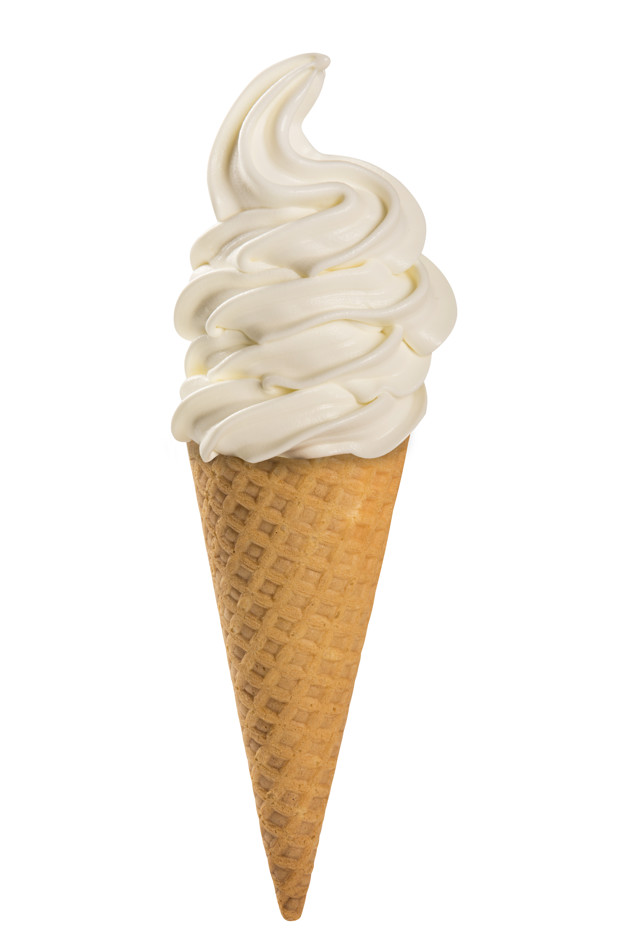
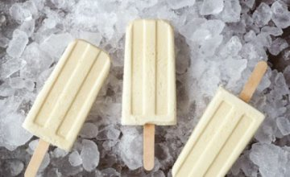

Home
Home
O gênio criador desse sabor, Bernardo Buontalenti, ou seu nome de batismo Bernardo delle Girandole. Viveu nos anos de 1531 a 1608, considerado esse o período áureo do gelato. Buontalenti era cenógrafo, arquiteto, paisagista, pintor, escultor, engenheiro militar e apaixonado pela arte de cozinhar. Ingressou ainda jovem no serviço dos Médici onde permaneceu por toda sua vida, sendo responsável pela realização dos mais suntuosos banquetes dos Médici de Florença. Um de seus banquetes mais famosos, foi realizado provavelmente no dia 05 de outubro de 1600, no “Salão de Cinquecento” do “Palazzo Vechio( Palácio Velho)”, sendo servidos 25 pratos frios e 30 pratos quentes, e um dos pratos foi a criação do Mestre do Gelato conhecido então como “Crema Fiorentina” ou atualmente “gelato Buontalenti”, uma mistura de leite, mel e gema de ovos (dizem que com um toque de vinho).
Bernardo foi ícone da cultura Florentina, sendo considerado um dos nomes mais importantes do Maneirismo. Estudou escultura com Michelangelo, pintura com Salviati e Bronzino, iluminura com Giulio Clovio e Arquitetura com Vasari tendo construído sua primeira obra e uma das mais importantes o Palazzo di Bianca Cappello em Florença em 1568 e fortificações como a Planta urbana de Livorno, Belvedere, o paisagismo do Parco de Pratolino e do Giardino de Boboli e a decoração do Palácio Pitti. Participou da criação das muralhas nas cidades de Pistoia, Grosseto, Prato, Portoferraio e Nápoles.
Bernardo Buontalenti deixou sua marca registrada no mundo através da cozinha por ter sido o inventor do gelato de Creme, até hoje o mais consumido por italianos, florentinos e todo o mundo, além de ser pioneiro na invenção das máquinas para mistura de ingredientes na cozinha a uma temperatura quase congelante, tornando a especiaria original dando assim nome ao específico “Gelato Italiano”.
Em 1979 em ocasião de um concurso realizado para recordar suas obras, a Gelateria Badiani de Florença, venceu o concurso apresentando a obra original de Buontalenti, o “Crema Fiorentina” e registrou a receita. Se você estiver pensando em visitar Florença, não pode deixar de ir a Pasticceria Badiani e provar o original Gelato Buontalenti, sabor que pode ser encontrado nos supermercados italianos com o nome de Salizione Siviero Maria e Pasticceria Badiani, como Gelato Buontalenti, para nós o delicioso sorvete de creme.
Fonte:Creme
Produto |
Valor |
Quantidade |
|  | R$15,00 | |
|  | R$25,00 | |
|  | R$5,00 | |
|  | R$3,00 | |